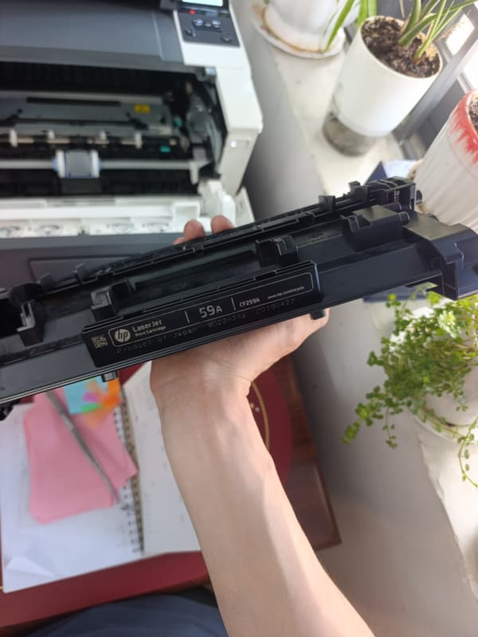

Kinh nghiệm dùng máy in
Ba bài dưới đây trả lời những câu khách hay hỏi kỹ thuật lúc đang chờ nạp mực. Viết thẳng, kể cả khi câu trả lời khiến chúng tôi bán được ít hơn.

Nạp Mực Hay Thay Hộp Mực Mới? Bốn Dấu Hiệu Để Quyết
Vỏ hộp mực nạp được 4–5 lần. Nhưng con số đó chỉ là trung bình — cách đọc chính xác hơn là nhìn bản in.

Nên Nạp Mực Máy In Bao Lâu Một Lần? Tính Theo Trang In
Không có mốc tháng nào đúng cho mọi máy. Nhưng có một nghịch lý đáng biết: máy in ít thường hỏng nhiều hơn máy in đều.

Dấu Hiệu Phải Thay Trống Máy In — Và Khi Nào Chưa Cần
Trống là chi tiết bị thay oan nhiều nhất. Có một cách tự kiểm rất đơn giản: đo khoảng cách giữa các vệt lỗi trên trang.
Đọc rồi vẫn không chắc?
Chụp ảnh bản in bị lỗi gửi Zalo — nhìn ảnh chẩn đoán nhanh hơn nghe mô tả.